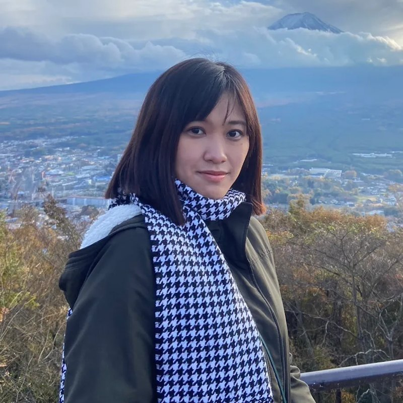

6 年以上跨領域經驗，橫跨科技、品牌與軟體產業。擔任實習 PO 期間負責企業內部管理系統：與客戶確認需求範圍、主持 USM 工作坊、安排 Sprint Backlog、追蹤進度並擔任測試，帶領 4 位開發實習生，與 SM 及 Tech Coach 協作；同時從釐清需求、規劃產品到介面與設計系統交付，並以 AI 自動化工作流提升團隊協作效率。

在 Laly.Lab，我相信品牌不僅僅是美感的呈現，
而是結合策略、技術與創意的完整體驗
Hi，我是 Laly，擁有超過六年跨領域設計經驗的 Product Designer，負責 B2B、B2C 數位產品設計，累積科技、品牌與軟體產業的經驗。目前在高雄，現職公司擔任設計師近三年，並以實習 PO 身分負責企業內部管理系統：與客戶確認需求範圍、主持 USM 工作坊、安排 Sprint Backlog、追蹤進度並擔任測試，帶領 4 位開發實習生，與 SM 及 Tech Coach 協作。專注於品牌設計、AI 自動化工作流、Web UI/UX 與使用者體驗，並參與團隊協助中小企業打造數位品牌與產品。曾與成大產學等大專院校及專業社群合作講課、舉辦設計工作坊，致力於推動設計、品牌與產業之間的連結。
授課與舉辦設計工作坊。
同時承擔產品規劃與設計，並以實習 PO 身分負責企業內部管理系統：與客戶確認需求範圍、主持 USM 工作坊、安排 Sprint Backlog、追蹤進度並擔任測試，帶領 4 位開發實習生，與 SM 及 Tech Coach 協作。範圍涵蓋客服系統、行政後台與跨產品設計系統，並運用 AI 自動化工作流優化設計與協作流程。
負責品牌視覺與 UI/UX 設計。
負責網站與數位產品的介面與使用者體驗設計，服務 B2B 客戶。
以 Product Owner 的視角決定「該做什麼」，把模糊需求轉成清楚的流程與優先順序。
擅長資料密集的 B2B 後台：客服、會員、入出款、報表與結算，兼顧操作效率與風險控管。
建立元件、色彩與字體規範，讓設計與開發能快速對齊、穩定擴充。
以 Sprint Backlog 安排任務、追蹤進度，用 Jira 與 Confluence 紀錄與協調，確保專案依計畫推進。
擔任測試人員，分析問題、彙整回饋並追蹤改善結果。
帶領 4 位開發實習生，與 SM 及 Tech Coach 協作，並與大專院校及專業社群合作講課、舉辦設計工作坊。